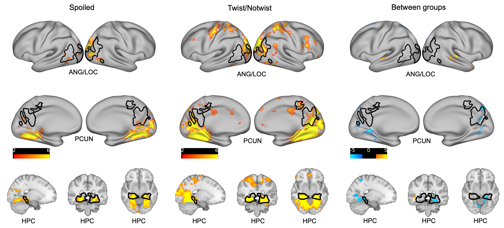

Ivy Chan
User researcher and incoming PhD in cognitive science and psychology, with 6+ years of applied research across industries, from accessibility research to enterprise product strategy.
About me
I have always been fascinated by how people think and make decisions. That curiosity led me to Psychology, and it has quietly shaped every career move I've made since.
I graduated from the University of Auckland in 2017 with first-class honours in Psychology and Commerce. My first step was as a Recruitment Consultant in 2018, connecting engineers, designers, and product managers with tech startups and corporates. It sounds like an unlikely starting point, but I had the chance to peek inside dozens of companies, understand what made their teams work, and get a real feel for the fast-moving tech industry from the inside. That led me to PALO IT, a tech consultancy, where I worked as an inhouse recruiter, still matching people to teams but at much closer distance, getting a clearer idea of day-to-day work. I also volunteer to contribute on projects, where I think my true passion lies.
By 2019, I officially moved into UX Research and Agile Consulting, running mixed-methods research for clients like LVMH, BNP, and QBE on how people make decisions inside complex digital systems. This was my early experience practising academic-like human research in an industry setting. It took time to adapt, but it was something I genuinely loved.
In 2021 I joined an Alibaba-backed ed-tech startup as their first technical hire, doing market and user research, shaping product, designing interfaces, and meeting investors. Then in 2022 I joined Maphive, an Apple indoor map data supplier, leading product development across apps, web platforms, and mapping tools that launched in Hong Kong, Japan, and Singapore. I led a team of 11 engineers, and we shipped something new every week. The project that stayed with me most was researching and designing a navigation app for visually impaired users. That was some of the most meaningful work I have done.
Then I made a deliberate choice to go deeper in research. I completed my MSc in Cognitive and Decision Science at UCL in 2024 with Distinction, on the Dean's List, writing a paper on how the brain makes sense of continuous experience (preparing for publication). I also won the UCL AI Foundry, supported by Google, The Economist, and Entrepreneurs First, co-building a speech recognition system for hearing-impaired users. Now I am a Research Assistant at UCL's Institute of Cognitive Neuroscience, with a PhD on the way (Oct 2026).
Work
My work has taken me across industries and company sizes, but the through-line is always the same: understanding people well enough to build something that genuinely works for them.
At Maphive, I led research across four products. For the Accessible Indoor Map App, I conducted in-depth research with users across the visual impairment spectrum, uncovering how they navigate space through sound, touch, and residual sight. Those findings shaped accessibility features, from sound beacons to high-contrast UI decisions. For the Indoor Map App, I led user research and UX design for the company's flagship product, translating complex positioning technology into an experience that felt effortless. For the Map Management Portal, I ran multi-stakeholder research, interviewing venue owners, sales teams, customer service staff, developers, and C-suite, to set the product foundation from scratch, resulting in a modularised web platform launched across Hong Kong, Singapore, Taiwan, and Japan. For the Map Production App, research with
field teams across countries and regions led to a revamped workflow that reduced the production team's workload by 70%.
At Big Bang Academy, an Alibaba-backed ed-tech startup, I conducted in-depth interviews in Cantonese, English, and Mandarin with parents, teachers, educational psychologists, and business stakeholders to reframe the company's business strategy. A detailed customer journey map was produced to communicate findings clearly and align investors and employees on direction.
During my time as a consultant, I worked for Neurum Health, a startup backed by Entrepreneurs First focusing on mental health. I led user research that informed an app redesign. I also worked for New World Development K11 Hong Kong to redesign their retail mall app, running in-context research, stakeholder interviews, and prototype testing with real mall visitors to define the revamp direction.

Academic research
My research, conducted at UCL's Institute of Cognitive Neuroscience under Dr Avital Hahamy, investigated whether neural reactivation, the brain reinstates neural activity patterns from past experiences when encountering related information, especially in the Default Mode Network, underlies how we actively comprehend a story as we watch it.
I used the movie The Sixth Sense as an experimental stimulus, exploiting its plot twist to create two groups of participants: those who knew the ending in advance, and those who did not. This study compares the behavioural data and neural data of different participants watching these same two versions of the movie. The behavioural experiment includes recruiting 95 participants online, who watched the film and continuously rated scene relatedness. I analysed these
using permutation-based statistics and inter-subject agreement measures to capture how foreknowledge shapes the subjective experience of narrative understanding. On the neural side, I analysed an fMRI dataset of 57 participants using representational similarity analysis (RSA) and whole-brain searchlight methods to measure the pattern of neural reactivation across the brain. Together, the two datasets allowed me to test whether the brain selectively reactivates the scenes that people judge as essential for comprehension. The work is preparing for publication.
In short, this research is about the mechanisms that shape how understanding forms in real time, much like how we take in, make sense of, and piece together everything we experience as life unfolds around us.

Blog
I write occasionally on Substack about design, accessibility, and human experience.